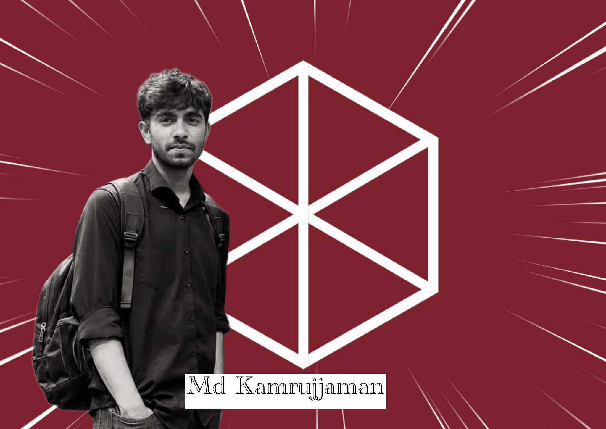

Economics student · Leuphana University
Economics. Data.
Human Behavior.
I’m Md Kamrujjaman, an Economics student at Leuphana University exploring how data and psychology can help us understand decisions and inform public policy.

Economics · Artificial Intelligence (AI)Explore portfolio
Explore my portfolio
- EducationUniversity studies, qualifications and scholarships.
- AchievementsAcademic recognition, debate awards and community work.
- ProjectsAcademic projects and research interests.
- ExperienceLeadership, debate coaching and volunteering.
- AboutBackground, goals and academic interests.
- SkillsResearch, communication and languages.
- ContactEmail and social links.